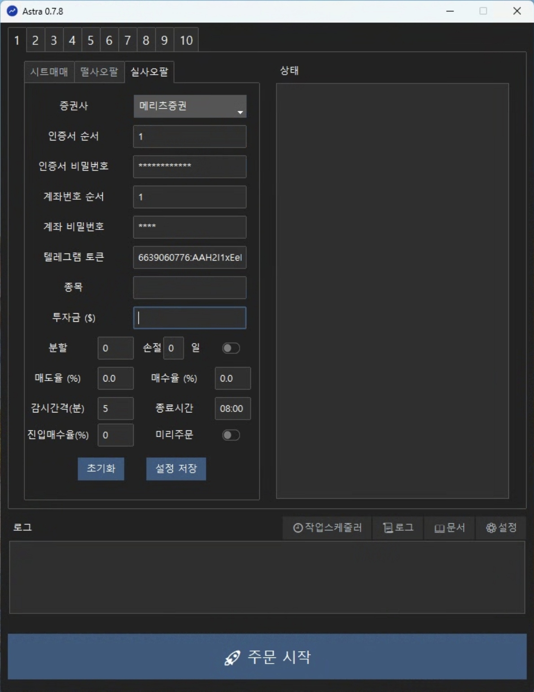

📈 실시간 떨사오팔 (실사오팔)
매매법 설명
개요
실사오팔은 기존 '떨사오팔' 전략을 실시간으로 확장한 자동 주식 매매 전략입니다. 하루 한 번 종가 기준으로만 거래하던 기존 방식과 달리, 정해진 시간 주기(예: 5분)마다 가격을 감시하고 장중 변동성에 즉각적인 반응으로 매매를 실행합니다. 실시간 주문 기준은 그리드(혹은 아바타) 방법을 참고했습니다.
떨사오팔과 차이점
| 항목 | 떨사오팔 | 실사오팔 |
|---|---|---|
| 거래 시점 | 1일 1회 장마감시 | 장중 실시간 (N분마다 감시) |
| 매수 기준 | 전일 종가 대비 매수율 이상 하락 시 | 1. 보유한 마지막 티어 매수가격 대비 매수율 이상 하락 시 2. 보유 티어가 없는 경우에는 감시 시점 현재가로 1티어 매수 |
| 매도 기준 | 티어 별 매수 가격에서 매도율 이상 상승 시 | 동일 |
| 주문 방식 | LOC | 현재 가격으로 지정가 주문 |
장점
- 장중 변동성이 큰 경우에 거래가 많이 이루어지므로 추가 수익이 가능합니다.
- 장 마감 후 애프터장에도 운용이 가능합니다.
- 보유 티어가 없으면 현재가로 1티어를 매수하므로 상승장에서 수익이 가능합니다. (떨사오팔은 보유 티어 없이 상승만 하는 경우 거래가 이루어지지 않음)
단점
- 하루에 여러 번 거래가 발생하므로 기존 방법 대비 더 많은 분할 수가 필요합니다. 분할 마다 시드 금액이 작으므로 장중 변동성이 크지 않은 상황에서는 기존 방법보다 수익이 낮아집니다.
사용 방법
1. 설정

| 설정 | 설명 |
|---|---|
| 종목 | 티커 이름을 입력합니다. |
| 투자금 | 초기 투자 금액을 달러 단위로 입력합니다. |
| 분할 | 투자금액을 분할할 개수를 입력합니다. 분할이 작으면 매도마다 수익이 높은 반면 시드가 빠르게 소진되고, 분할이 크면 매도마다 수익은 적지만 하방 커버가 늘어납니다. |
| 손절일 | 매수 후 며칠 동안 매도가 되지 않으면 손절할 날짜 수를 입력합니다. 주식 시장이 열리는 날을 기준으로 계산이 되며, 사용자가 프로그램을 실행하지 않은 날은 손절일 계산에서 제외됩니다. |
| 매도율 | 매수 가격에서 최소 몇 퍼센트 상승할 때 매도할 지 결정합니다. (예) 1% 상승시 매도할 경우 1 입력 |
| 매수율 | 매수 가격에서 최소 몇 퍼센트 하락할 때 다음 티어를 매수할 지 결정합니다. (예) 0.5% 하락시 매수할 경우 -0.5입력 |
| 감시간격 | 몇 분 마다 감시를 할 지에 대한 설정입니다. 0을 입력하면 대기시간 없이 감시를 수행합니다. |
| 종료시간 | 감시를 종료할 시간입니다. HH:MM형식으로 입력합니다. |
설정을 입력한 후 "설정 저장" 버튼을 클릭합니다.
설정 저장
설정을 변경하면 꼭 설정 저장 버튼을 눌러야 변경된 정보가 반영이 됩니다.
최적화 설정
실시간 감시 주문을 하기 때문에 백테스트가 불가능하므로 최적의 설정은 알 수 없습니다. 사용자의 직관과 투자 성향에 따라 적절히 설정해서 사용하시기 바랍니다.
2. 주문하기
주문 시작 버튼을 누르면 주문이 시작됩니다.
다음과 같은 순서로 진행이 됩니다.
- HTS 실행
- 반복 실행
- 이전 주문 체결 확인 및 티어 조정
- 보유 수량이 없는 경우에 현재 가격으로 1티어 매수 주문
- 현재 가격이 티어들의 매도가 보다 높은 경우에 매도 주문 (조건을 만족하는 여러 티어 동시 주문)
- 현재 가격이 다음 티어의 매수가 보다 낮은 경우에 매수 주문 (한 개 티어 주문)
- 현재 상태 (현재 티어, 현재가, 매수가, 매도가) 텔레그램 메시지 전송
- 다음 번 감시가 종료 시간을 넘어가는 경우에 종료
- 정산 텔레그램 메시지 전송 후 종료
키보드 마우스 동작 금지
주문 동작이 일어나는 동안 마우스나 키보드를 움직이면 문제가 생길 수 있으니 주의바랍니다.
3. (필요한 경우) 현재 상태 수정
현재 상태가 %USERPROFILE%\.astra\realtime_tsop_{슬롯번호}.csv 파일에 저장이 됩니다. 엑셀을 사용해서 확인 및 편집이 가능하고, 엑셀이 설치되어 있지 않더라도 메모장에서 열어서 확인이 가능합니다.